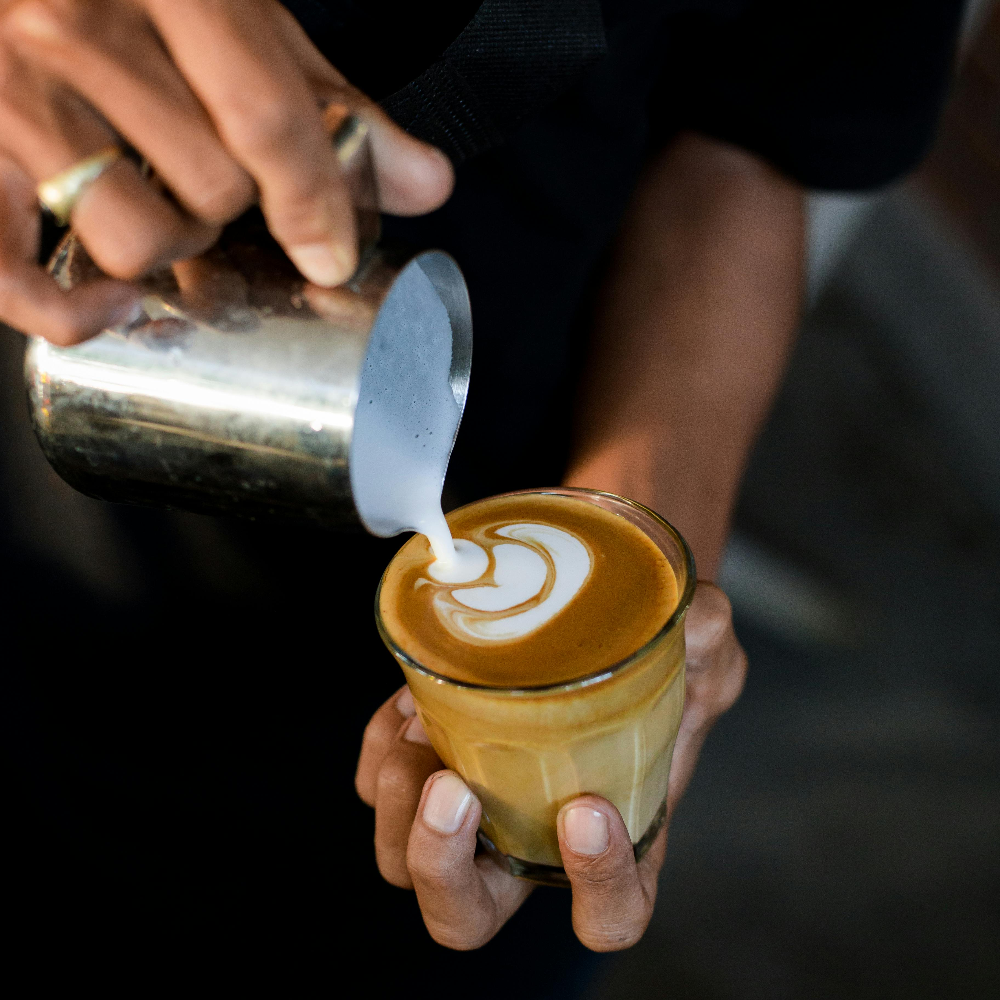

Latte Un latte con café de especialidad comienza con un espresso rico y matizado, hecho de granos de alta calidad. Se le añade leche texturizada hasta obtener una espuma cremosa y sedosa. El resultado es una bebida suave y equilibrada, con una mezcla armoniosa de sabores complejos y una textura aterciopelada.
Cold Brew Un cold brew con café de especialidad es un café concentrado y suave, hecho al remojar granos de alta calidad en agua fría por 12 a 24 horas. El resultado es una bebida refrescante, con un sabor profundo y menos ácido, con matices variados que pueden incluir frutas, nueces o chocolate.
 Capuccino Un cappuccino con café de especialidad combina un espresso intenso con leche vaporizada y espuma cremosa. Ofrece un equilibrio perfecto entre la riqueza del café y la suavidad de la leche, con una textura aterciopelada y un sabor complejo.